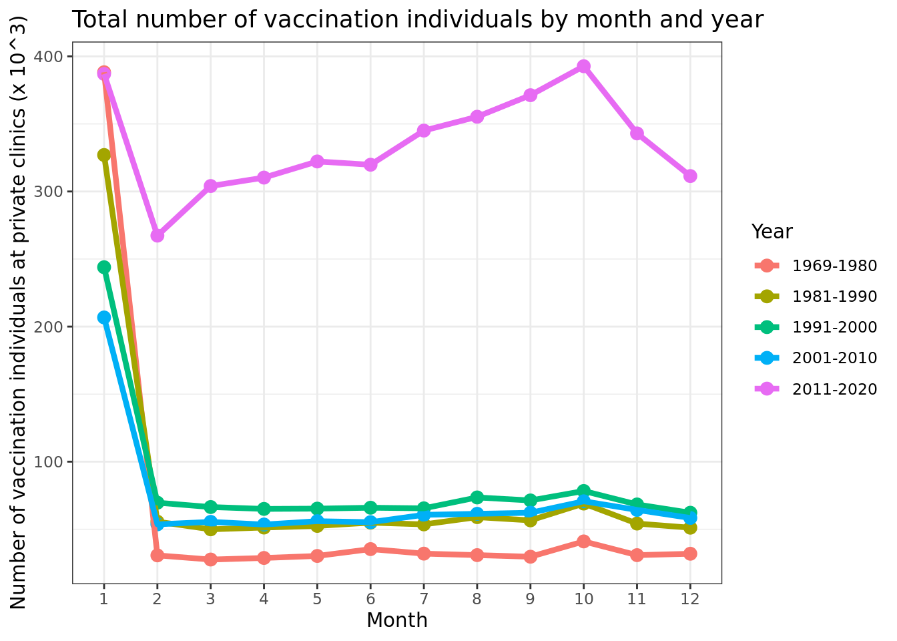
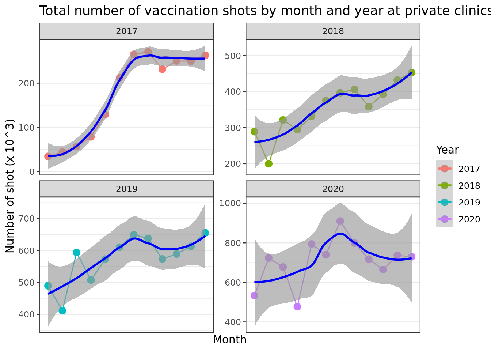

Last updated: 2022-03-11
Checks: 6 1
Knit directory: Vaccination_COVID/
This reproducible R Markdown analysis was created with workflowr (version 1.7.0). The Checks tab describes the reproducibility checks that were applied when the results were created. The Past versions tab lists the development history.
The R Markdown file has unstaged changes. To know which version of the R Markdown file created these results, you’ll want to first commit it to the Git repo. If you’re still working on the analysis, you can ignore this warning. When you’re finished, you can run wflow_publish to commit the R Markdown file and build the HTML.
Great job! The global environment was empty. Objects defined in the global environment can affect the analysis in your R Markdown file in unknown ways. For reproduciblity it’s best to always run the code in an empty environment.
The command set.seed(20210126) was run prior to running the code in the R Markdown file. Setting a seed ensures that any results that rely on randomness, e.g. subsampling or permutations, are reproducible.
Great job! Recording the operating system, R version, and package versions is critical for reproducibility.
Nice! There were no cached chunks for this analysis, so you can be confident that you successfully produced the results during this run.
Great job! Using relative paths to the files within your workflowr project makes it easier to run your code on other machines.
Great! You are using Git for version control. Tracking code development and connecting the code version to the results is critical for reproducibility.
The results in this page were generated with repository version 7dce192. See the Past versions tab to see a history of the changes made to the R Markdown and HTML files.
Note that you need to be careful to ensure that all relevant files for the analysis have been committed to Git prior to generating the results (you can use wflow_publish or wflow_git_commit). workflowr only checks the R Markdown file, but you know if there are other scripts or data files that it depends on. Below is the status of the Git repository when the results were generated:
Ignored files:
Ignored: .Rhistory
Ignored: .Rproj.user/
Ignored: analysis/figure/
Untracked files:
Untracked: analysis/02_data_exploration2_private_south_addition.Rmd
Unstaged changes:
Modified: analysis/02_data_exploration2_private_south.Rmd
Modified: analysis/06_additional_analyses.Rmd
Note that any generated files, e.g. HTML, png, CSS, etc., are not included in this status report because it is ok for generated content to have uncommitted changes.
These are the previous versions of the repository in which changes were made to the R Markdown (analysis/02_data_exploration2_private_south.Rmd) and HTML (docs/02_data_exploration2_private_south.html) files. If you’ve configured a remote Git repository (see ?wflow_git_remote), click on the hyperlinks in the table below to view the files as they were in that past version.
| File | Version | Author | Date | Message |
|---|---|---|---|---|
| Rmd | 644e91d | Duc Du | 2022-03-11 | Update |
| Rmd | b97fc2f | thinhong | 2022-03-10 | knit data_exploration2_private_south |
| html | b97fc2f | thinhong | 2022-03-10 | knit data_exploration2_private_south |
| Rmd | 515985e | Duc Du | 2022-03-10 | Update |
| Rmd | ed37a41 | Duc Du | 2022-03-09 | Update |
knitr::opts_chunk$set()
library(workflowr)This is workflowr version 1.7.0
Run ?workflowr for help getting startedlibrary(data.table)
library(tidyverse)── Attaching packages ─────────────────────────────────────── tidyverse 1.3.1 ──✓ ggplot2 3.3.5 ✓ purrr 0.3.4
✓ tibble 3.1.6 ✓ dplyr 1.0.8
✓ tidyr 1.2.0 ✓ stringr 1.4.0
✓ readr 2.1.2 ✓ forcats 0.5.1── Conflicts ────────────────────────────────────────── tidyverse_conflicts() ──
x dplyr::between() masks data.table::between()
x dplyr::filter() masks stats::filter()
x dplyr::first() masks data.table::first()
x dplyr::lag() masks stats::lag()
x dplyr::last() masks data.table::last()
x purrr::transpose() masks data.table::transpose()library(dplyr)
library(lubridate)
Attaching package: 'lubridate'The following objects are masked from 'package:data.table':
hour, isoweek, mday, minute, month, quarter, second, wday, week,
yday, yearThe following objects are masked from 'package:base':
date, intersect, setdiff, unionlibrary(ggplot2)
library(gt)
library(gtsummary)
library(ggridges)error_datetime <- read.csv(file.path("~", "tuann349_vad", "error_datetime.csv")) %>% as.data.frame()
error_duplicate <- read.csv(file.path("~", "tuann349_vad", "error_duplicate.csv")) %>% as.data.frame()
rm(list = ls(all.names = TRUE))
dtadir <- file.path("~", "sharefolder", "data", "tuann349")
publicProvinces <- list.dirs(dtadir, full.names = F, recursive = F)
publicProvinces <- stringi::stri_trans_general(publicProvinces, "any-ascii")
#
# individual_private <- readRDS(file = file.path("~", "tuann349_vad", "individual_private.rds"))
#
# individual_private$year <- year(individual_private$dob)
# individual_private$month <- month(individual_private$dob)
# individual_private$week <- week(individual_private$dob)
#
# library(operators)
# individual_private_south <- individual_private[individual_private$year<=2020 & individual_private$province %!in% publicProvinces]
#
# individual_private_south_overall <- individual_private_south[, .N, by = .(year, month)]
# individual_private_south_overall2 <- individual_private_south[, .N, by = .(year, month, week)]
# individual_private_south_province <- individual_private_south[, .N, by = .(year, month, province)]
# individual_private_south_province2 <- individual_private_south[, .N, by = .(year, month, week, province)]
# individual_private_south_sex <- individual_private_south[, .N, by = .(year, month, sex)]
# individual_private_south_sex2 <- individual_private_south[, .N, by = .(year, month, week, sex)]
# individual_private_south_province_sex <- individual_private_south[, .N, by = .(year, month, province, sex)]
# individual_private_south_province_sex2 <- individual_private_south[, .N, by = .(year, month, week, province, sex)]
#
# save(individual_private_south_overall, individual_private_south_province, individual_private_south_sex, individual_private_south_province_sex, file = file.path("~", "updated_dataset", "individual_private_south.Rdata"))
#
# tab_individual_private_south_sum <- tbl_summary(individual_private_south[, .(province, sex, factor(year))])
#
# save(tab_individual_private_south_sum, file = file.path("~", "updated_dataset", "tab_individual_private_south.Rdata"))vaccine_vad_private <- readRDS(file = file.path("~", "updated_dataset", "vaccine_vad_private.rds"))
vaccine_vad_private_south <- vaccine_vad_private[vaccine_vad_private$year<=2020 & !(vaccine_vad_private$province %in% publicProvinces)]
#
# vaccine_overall_private_south <- vaccine_vad_private_south[, .N, by = .(vyear, vmonth)]
# vaccine_overall_private_south2 <- vaccine_vad_private_south[, .N, by = .(vyear, vmonth, vweek)]
#
# vaccine_schedule_private_south <- vaccine_vad_private_south[, .N, by = .(vsyear, vsmonth)]
# vaccine_schedule_private_south2 <- vaccine_vad_private_south[, .N, by = .(vsyear, vsmonth, vsweek)]
#
# vaccine_province_private_south <- vaccine_vad_private_south[, .N, by = .(vyear, vmonth, province)]
#
# vaccine_vacname_private_south <- vaccine_vad_private_south[, .N, by = .(vyear, vmonth, vacname2)]
# #vaccine_vacname_private2 <- vaccine_vad_private[, .N, by = .(vyear, vmonth, vweek, vacname2)]
#
# vaccine_province_vacname_private_south <- vaccine_vad_private_south[, .N, by = .(vyear, vmonth, province, vacname2)]
# #vaccine_province_vacname_private2 <- vaccine_vad_private[, .N, by = .(vyear, vmonth, vweek, province, vacname2)]
#
# save(vaccine_overall_private_south, vaccine_province_private_south, vaccine_vacname_private_south, vaccine_province_vacname_private_south, file = file.path("~", "updated_dataset", "vaccine_private_south.Rdata"))
#
# tab_vac_sum_private_south <- tbl_summary(vaccine_vad_private_south[, .(province, vacname2, factor(vyear))])
# save(tab_vac_sum_private_south, file = file.path("~", "updated_dataset", "tab_vaccine_private_south.Rdata"))
rm(list=c("vaccine_vad_private"))
gc() used (Mb) gc trigger (Mb) max used (Mb)
Ncells 6835964 365.1 19479442 1040.4 10264454 548.2
Vcells 1054249251 8043.3 2920863082 22284.5 2791014866 21293.8load(file.path("~", "updated_dataset", "vaccine_private_south.Rdata"))
load(file.path("~", "updated_dataset", "tab_vaccine_private_south.Rdata"))
load(file.path("~", "updated_dataset", "individual_private_south.Rdata"))
load(file.path("~", "updated_dataset", "tab_individual_private_south.Rdata"))tab_vac_sum_private_southℹ Updating gtsummary object from `x$table_header` to `x$table_styling` introduced in "v1.4.0".| Characteristic | N = 21,738,3841 |
|---|---|
| province | |
| An Giang | 319,549 (1.5%) |
| Ba Ria - Vung Tau | 587,633 (2.7%) |
| Bac Lieu | 199,508 (0.9%) |
| Ben Tre | 480,780 (2.2%) |
| Binh Dinh | 435,148 (2.0%) |
| Binh Duong | 1,299,825 (6.0%) |
| Binh Phuoc | 253,489 (1.2%) |
| Binh Thuan | 293,437 (1.3%) |
| Ca Mau | 119,223 (0.5%) |
| Can Tho | 351,440 (1.6%) |
| Da Nang | 536,027 (2.5%) |
| Dak Lak | 521,535 (2.4%) |
| Dak Nong | 164,057 (0.8%) |
| Dong Nai | 1,639,108 (7.5%) |
| Dong Thap | 408,131 (1.9%) |
| Gia Lai | 93,816 (0.4%) |
| Hau Giang | 92,849 (0.4%) |
| Khanh Hoa | 328,026 (1.5%) |
| Kien Giang | 248,677 (1.1%) |
| Kon Tum | 106,820 (0.5%) |
| Lam Dong | 230,274 (1.1%) |
| Long An | 764,471 (3.5%) |
| Ninh Thuan | 212,475 (1.0%) |
| Phu Yen | 192,646 (0.9%) |
| Quang Binh | 88,383 (0.4%) |
| Quang Nam | 320,326 (1.5%) |
| Quang Ngai | 337,886 (1.6%) |
| Quang Tri | 95,658 (0.4%) |
| Soc Trang | 234,237 (1.1%) |
| Tay Ninh | 445,456 (2.0%) |
| Thanh pho Ho Chi Minh | 8,750,312 (40%) |
| Thua Thien Hue | 358,071 (1.6%) |
| Tien Giang | 642,891 (3.0%) |
| Tinh tap huan | 18 (<0.1%) |
| Tra Vinh | 243,974 (1.1%) |
| Vinh Long | 342,228 (1.6%) |
| vacname2 | |
| BCG | 714 (<0.1%) |
| DPT | 167,381 (0.8%) |
| DPT_Hib | 170 (<0.1%) |
| DPT_Polio | 206,779 (1.0%) |
| DPT_Polio_HepB_Hib | 2,399,116 (11%) |
| DPT_Polio_Hib | 244,984 (1.1%) |
| HepA | 247,969 (1.1%) |
| HepAB | 186,365 (0.9%) |
| HepB | 1,751,555 (8.1%) |
| Hib | 142,820 (0.7%) |
| HPV | 486,810 (2.2%) |
| Influenza | 2,280,946 (10%) |
| IPV | 636 (<0.1%) |
| JEV | 1,263,780 (5.8%) |
| Measle | 253,092 (1.2%) |
| Measle_Mumps_Rubella | 1,291,610 (5.9%) |
| Measle_Rubella | 9,977 (<0.1%) |
| Meningo_AC | 82,292 (0.4%) |
| Meningo_ACYW | 239,878 (1.1%) |
| Meningo_BC | 793,807 (3.7%) |
| Rabies | 1,866,370 (8.6%) |
| Rota | 1,602,857 (7.4%) |
| Rubella | 29,319 (0.1%) |
| SAT | 403,603 (1.9%) |
| Strep | 2,308,210 (11%) |
| Td | 87,801 (0.4%) |
| Tetanus | 1,476,985 (6.8%) |
| Typhoid | 248,634 (1.1%) |
| Varicella | 1,197,279 (5.5%) |
| Vibrio | 463,560 (2.1%) |
| Yellow | 2,587 (<0.1%) |
| Unknown | 498 |
| V3 | |
| 2017 | 2,083,999 (9.6%) |
| 2018 | 4,249,465 (20%) |
| 2019 | 6,903,675 (32%) |
| 2020 | 8,501,245 (39%) |
| 1 n (%) | |
tab_individual_private_south_sumℹ Updating gtsummary object from `x$table_header` to `x$table_styling` introduced in "v1.4.0".| Characteristic | N = 7,553,9791 |
|---|---|
| province | |
| An Giang | 157,689 (2.1%) |
| Ba Ria - Vung Tau | 224,311 (3.0%) |
| Bac Lieu | 89,529 (1.2%) |
| Ben Tre | 211,237 (2.8%) |
| Binh Dinh | 180,831 (2.4%) |
| Binh Duong | 349,548 (4.6%) |
| Binh Phuoc | 93,941 (1.2%) |
| Binh Thuan | 118,002 (1.6%) |
| Ca Mau | 53,185 (0.7%) |
| Can Tho | 117,610 (1.6%) |
| Da Nang | 159,095 (2.1%) |
| Dak Lak | 212,862 (2.8%) |
| Dak Nong | 72,190 (1.0%) |
| Dong Nai | 503,465 (6.7%) |
| Dong Thap | 170,132 (2.3%) |
| Gia Lai | 35,562 (0.5%) |
| Hau Giang | 38,590 (0.5%) |
| Khanh Hoa | 136,959 (1.8%) |
| Kien Giang | 100,141 (1.3%) |
| Kon Tum | 48,870 (0.6%) |
| Lam Dong | 92,606 (1.2%) |
| Long An | 308,968 (4.1%) |
| Ninh Thuan | 103,265 (1.4%) |
| Phu Yen | 82,702 (1.1%) |
| Quang Binh | 32,067 (0.4%) |
| Quang Nam | 97,257 (1.3%) |
| Quang Ngai | 116,661 (1.5%) |
| Quang Tri | 41,495 (0.5%) |
| Soc Trang | 105,543 (1.4%) |
| Tay Ninh | 169,980 (2.3%) |
| Thanh pho Ho Chi Minh | 2,673,199 (35%) |
| Thua Thien Hue | 140,605 (1.9%) |
| Tien Giang | 252,403 (3.3%) |
| Tinh tap huan | 6 (<0.1%) |
| Tra Vinh | 114,450 (1.5%) |
| Vinh Long | 149,023 (2.0%) |
| sex | |
| 0 | 3,574,802 (47%) |
| 1 | 3,965,878 (53%) |
| 2 | 13,299 (0.2%) |
| V3 | |
| 1969 | 55,037 (0.7%) |
| 1970 | 63,908 (0.8%) |
| 1971 | 53,635 (0.7%) |
| 1972 | 63,329 (0.8%) |
| 1973 | 56,193 (0.7%) |
| 1974 | 55,084 (0.7%) |
| 1975 | 59,018 (0.8%) |
| 1976 | 61,726 (0.8%) |
| 1977 | 61,685 (0.8%) |
| 1978 | 68,560 (0.9%) |
| 1979 | 67,812 (0.9%) |
| 1980 | 70,723 (0.9%) |
| 1981 | 67,866 (0.9%) |
| 1982 | 82,195 (1.1%) |
| 1983 | 86,479 (1.1%) |
| 1984 | 90,095 (1.2%) |
| 1985 | 95,261 (1.3%) |
| 1986 | 85,184 (1.1%) |
| 1987 | 97,805 (1.3%) |
| 1988 | 103,862 (1.4%) |
| 1989 | 105,230 (1.4%) |
| 1990 | 120,511 (1.6%) |
| 1991 | 117,310 (1.6%) |
| 1992 | 122,984 (1.6%) |
| 1993 | 127,336 (1.7%) |
| 1994 | 116,594 (1.5%) |
| 1995 | 111,302 (1.5%) |
| 1996 | 95,946 (1.3%) |
| 1997 | 86,538 (1.1%) |
| 1998 | 64,895 (0.9%) |
| 1999 | 71,588 (0.9%) |
| 2000 | 80,804 (1.1%) |
| 2001 | 67,277 (0.9%) |
| 2002 | 63,894 (0.8%) |
| 2003 | 74,159 (1.0%) |
| 2004 | 70,571 (0.9%) |
| 2005 | 75,866 (1.0%) |
| 2006 | 84,777 (1.1%) |
| 2007 | 96,482 (1.3%) |
| 2008 | 107,669 (1.4%) |
| 2009 | 120,057 (1.6%) |
| 2010 | 97,269 (1.3%) |
| 2011 | 147,432 (2.0%) |
| 2012 | 209,083 (2.8%) |
| 2013 | 222,989 (3.0%) |
| 2014 | 249,930 (3.3%) |
| 2015 | 370,770 (4.9%) |
| 2016 | 456,071 (6.0%) |
| 2017 | 641,572 (8.5%) |
| 2018 | 779,740 (10%) |
| 2019 | 658,087 (8.7%) |
| 2020 | 293,789 (3.9%) |
| 1 n (%) | |
t1 <- vaccine_vad_private_south %>%
mutate(age=2021-as.numeric(year),
agegr=NA,
agegr=ifelse(age>=0 & age<=10, 1,
ifelse(age>10 & age<=20, 2,
ifelse(age>20 & age<=30, 3,
ifelse(age>30 & age<=40, 4,
ifelse(age>40 & age<=50, 5,
ifelse(age>50, 6, agegr)))))
),
agegr=factor(agegr, levels = c(1,2,3,4,5,6), labels = c("0-10", "11-20", "21-30", "31-40", "41-50", "> 50")),
yeargr=NA,
yeargr=ifelse(year>=1969 & year<=1980, 1,
ifelse(year>1980 & year<=1990, 2,
ifelse(year>1990 & year<=2000, 3,
ifelse(year>2000 & year<=2010, 4,
ifelse(year>2010 & year<=2020, 5, yeargr))))
),
yeargr=factor(yeargr, levels = c(1,2,3,4,5), labels = c("1969-1980", "1981-1990", "1991-2000", "2001-2010","2011-2020"))) %>%
dplyr::select(age, agegr, sex, province, yeargr) %>%
tbl_summary(
#by=type, # split table by group
percent = "column",
missing = "no" # don't list missing data separately
) %>%
add_n() %>% # add column with total number of non-missing observations
#add_p(pvalue_fun=~style_pvalue(.x,digits=2)) %>% # test for a difference between groups
modify_header(label = "**Variable**") %>% # update the column header
bold_labels()
t1| Variable | N | N = 21,738,3841 |
|---|---|---|
| age | 21,738,384 | 4 (3, 16) |
| agegr | 21,738,384 | |
| 0-10 | 15,143,573 (70%) | |
| 11-20 | 1,737,424 (8.0%) | |
| 21-30 | 1,850,873 (8.5%) | |
| 31-40 | 1,615,478 (7.4%) | |
| 41-50 | 1,159,617 (5.3%) | |
| > 50 | 231,419 (1.1%) | |
| sex | 21,738,384 | |
| 0 | 10,640,780 (49%) | |
| 1 | 11,068,643 (51%) | |
| 2 | 28,961 (0.1%) | |
| province | 21,738,384 | |
| An Giang | 319,549 (1.5%) | |
| Ba Ria - Vung Tau | 587,633 (2.7%) | |
| Bac Lieu | 199,508 (0.9%) | |
| Ben Tre | 480,780 (2.2%) | |
| Binh Dinh | 435,148 (2.0%) | |
| Binh Duong | 1,299,825 (6.0%) | |
| Binh Phuoc | 253,489 (1.2%) | |
| Binh Thuan | 293,437 (1.3%) | |
| Ca Mau | 119,223 (0.5%) | |
| Can Tho | 351,440 (1.6%) | |
| Da Nang | 536,027 (2.5%) | |
| Dak Lak | 521,535 (2.4%) | |
| Dak Nong | 164,057 (0.8%) | |
| Dong Nai | 1,639,108 (7.5%) | |
| Dong Thap | 408,131 (1.9%) | |
| Gia Lai | 93,816 (0.4%) | |
| Hau Giang | 92,849 (0.4%) | |
| Khanh Hoa | 328,026 (1.5%) | |
| Kien Giang | 248,677 (1.1%) | |
| Kon Tum | 106,820 (0.5%) | |
| Lam Dong | 230,274 (1.1%) | |
| Long An | 764,471 (3.5%) | |
| Ninh Thuan | 212,475 (1.0%) | |
| Phu Yen | 192,646 (0.9%) | |
| Quang Binh | 88,383 (0.4%) | |
| Quang Nam | 320,326 (1.5%) | |
| Quang Ngai | 337,886 (1.6%) | |
| Quang Tri | 95,658 (0.4%) | |
| Soc Trang | 234,237 (1.1%) | |
| Tay Ninh | 445,456 (2.0%) | |
| Thanh pho Ho Chi Minh | 8,750,312 (40%) | |
| Thua Thien Hue | 358,071 (1.6%) | |
| Tien Giang | 642,891 (3.0%) | |
| Tinh tap huan | 18 (<0.1%) | |
| Tra Vinh | 243,974 (1.1%) | |
| Vinh Long | 342,228 (1.6%) | |
| yeargr | 21,738,384 | |
| 1969-1980 | 1,391,036 (6.4%) | |
| 1981-1990 | 1,615,478 (7.4%) | |
| 1991-2000 | 1,850,873 (8.5%) | |
| 2001-2010 | 1,737,424 (8.0%) | |
| 2011-2020 | 15,143,573 (70%) | |
| 1 Median (IQR); n (%) | ||
individual_private_south_overall <- individual_private_south_overall %>% mutate(
yeargr=NA,
yeargr=ifelse(year>=1969 & year<=1980, 1,
ifelse(year>1980 & year<=1990, 2,
ifelse(year>1990 & year<=2000, 3,
ifelse(year>2000 & year<=2010, 4,
ifelse(year>2010 & year<=2020, 5, yeargr))))
),
yeargr=factor(yeargr, levels = c(1,2,3,4,5), labels = c("1969-1980", "1981-1990", "1991-2000", "2001-2010","2011-2020"))
)
individual_private_south_overall2 <- aggregate(individual_private_south_overall$N, by = list(individual_private_south_overall$yeargr, individual_private_south_overall$month), FUN=sum)
colnames(individual_private_south_overall2) <- c("yeargr", "month", "N")ggplot(data = individual_private_south_overall2, aes(x = factor(month), y = N/1000, color = factor(yeargr))) +
# geom_rect(aes(xmin = 3, xmax = 5, ymin = -Inf, ymax = Inf), fill = "grey90", color = "grey90", alpha = 0.015) +
geom_point(size = 3) +
geom_line(aes(group = yeargr), size = 1.5) +
scale_x_discrete(name = "Month") +
scale_y_continuous(name = "Number of vaccination individuals at private clinics (x 10^3)") +
scale_color_discrete(name = "Year") +
theme_bw() +
ggtitle("Total number of vaccination individuals by month and year")
| Version | Author | Date |
|---|---|---|
| b97fc2f | thinhong | 2022-03-10 |
# ggsave(filename = file.path("..", "figures", "individual_private_month_year_south.png"), width = 15, height = 10)ggplot(individual_private_south_overall2, aes(month, N/1000, color = factor(yeargr))) +
geom_point(size=2) +
geom_line(aes(group=yeargr)) +
geom_smooth () +
#stat_smooth(method="loess", formula = y ~ x, colour="blue", size=0.5) +
scale_x_discrete(name = "Month") +
scale_y_continuous(name = "Number of vaccination individuals (x 10^3)") +
scale_color_discrete(name = "Year") +
theme_bw() +
facet_wrap(~ yeargr, scale = "free_y") +
ggtitle("Total number of vaccination individuals by month and year")`geom_smooth()` using method = 'loess' and formula 'y ~ x'
| Version | Author | Date |
|---|---|---|
| b97fc2f | thinhong | 2022-03-10 |
# ggsave(filename = file.path("..", "figures", "individual_private_month_year_south3.png"), width = 15, height = 10)ggplot(data = vaccine_overall_private_south, aes(x = factor(vmonth), y = N/1000, color = factor(vyear))) +
geom_rect(aes(xmin = 3, xmax = 5, ymin = -Inf, ymax = Inf), fill = "grey80", color = "grey90", alpha = 0.015) +
geom_point(size = 3) +
geom_line(aes(group = vyear), size = 1.5) +
scale_x_discrete(name = "Month") +
geom_smooth() +
stat_smooth(method="loess", formula = y ~ x, colour="blue", size=1.5) +
scale_y_continuous(name = "Number of shot (x 10^3)", breaks = seq(from = 50, to = 1600, by = 100)) +
scale_color_discrete(name = "Year") +
theme_bw() +
ggtitle("Total number of vaccination shots by month and year at private clinics")`geom_smooth()` using method = 'loess' and formula 'y ~ x'
| Version | Author | Date |
|---|---|---|
| b97fc2f | thinhong | 2022-03-10 |
# ggsave(filename = file.path("..", "figures", "vaccine_month_year_private_south.png"), width = 7, height = 5)ggplot(vaccine_overall_private_south, aes(vmonth, N/1000, color = factor(vyear))) +
geom_point(size=3) +
geom_line(aes(group=vyear)) +
geom_smooth () +
stat_smooth(method="loess", formula = y ~ x, colour="blue", size=1) +
scale_x_discrete(name = "Month") +
scale_y_continuous(name = "Number of shot (x 10^3)") +
scale_color_discrete(name = "Year") +
theme_bw() +
ggtitle("Total number of vaccination shots by month and year at private clinics") +
facet_wrap(~ vyear, scale = "free_y")`geom_smooth()` using method = 'loess' and formula 'y ~ x'
| Version | Author | Date |
|---|---|---|
| b97fc2f | thinhong | 2022-03-10 |
# ggsave(filename = file.path("..", "figures", "vaccine_month_year_private_south2.png"), width = 7, height = 5)ggplot(data = vaccine_province_private_south, aes(x = factor(vmonth), y = N/1000, color = factor(vyear))) +
geom_rect(aes(xmin = 3, xmax = 5, ymin = -Inf, ymax = Inf), fill = "grey80", color = "grey90", alpha = 0.015) +
geom_point() +
geom_line(aes(group = vyear)) +
scale_x_discrete(name = "Month") +
scale_y_continuous(name = "Number of shot (x 10^3)") +
scale_color_discrete(name = "Year") +
facet_wrap(~ province, scale = "free_y") +
theme_bw() +
theme(legend.position = "bottom") +
ggtitle("Number of vaccination shot in each province by month and year at private clinics")# ggsave(filename = file.path("..", "figures", "vaccine_province_year_private_south.png"), width = 10, height = 7)ggplot(data = vaccine_vacname_private_south[!is.na(vacname2)], aes(x = factor(vmonth), y = N/1000)) +
geom_rect(aes(xmin = 3, xmax = 5, ymin = -Inf, ymax = Inf), fill = "grey80", color = "grey90", alpha = 0.015) +
geom_point(aes(color = factor(vyear))) +
geom_line(aes(group = vyear, color = factor(vyear))) +
scale_x_discrete(name = "Month") +
scale_y_continuous(name = "Number of shot (x 10^3)") +
scale_color_discrete(name = "Year") +
facet_wrap(~ vacname2, scale = "free_y") +
theme_bw() +
theme(legend.position = "bottom") +
ggtitle("Total number of shots of each vaccine at private clinics by month and year")# ggsave(filename = file.path("..", "figures", "vaccine_month_year_vaccine_private_south.png"), width = 10, height = 7)ggplot(data = vaccine_vacname_private_south[!is.na(vacname2)], aes(x = reorder(vacname2, N/1000, decreasing=T), y = N/1000)) +
#geom_rect(aes(xmin = 3, xmax = 5, ymin = -Inf, ymax = Inf), fill = "grey80", color = "grey90", alpha = 0.015) +
geom_bar(stat = "identity", fill="red", width = 0.75) +
#geom_text(aes(label = N/1000, y = N/1000 + 10), size = 3) +
scale_x_discrete(name = NULL) +
scale_y_continuous(name = "Number of shot (x 10^3)") +
scale_color_discrete(name = "Year") +
facet_wrap(~ vyear, scale = "free_y") +
theme_bw() +
theme(axis.text.y = element_text(size = 6),
panel.grid.major = element_blank()) + coord_flip() +
ggtitle("Total number of shots at private clinics by vaccine and year")# ggsave(filename = file.path("..", "figures", "vaccine_year_vaccine_private_south.png"), width = 10, height = 7)
sessionInfo()R version 4.0.5 (2021-03-31)
Platform: x86_64-pc-linux-gnu (64-bit)
Running under: Ubuntu 18.04.5 LTS
Matrix products: default
BLAS: /usr/lib/x86_64-linux-gnu/blas/libblas.so.3.7.1
LAPACK: /usr/lib/x86_64-linux-gnu/lapack/liblapack.so.3.7.1
locale:
[1] LC_CTYPE=C.UTF-8 LC_NUMERIC=C LC_TIME=C.UTF-8
[4] LC_COLLATE=C.UTF-8 LC_MONETARY=C.UTF-8 LC_MESSAGES=C.UTF-8
[7] LC_PAPER=C.UTF-8 LC_NAME=C LC_ADDRESS=C
[10] LC_TELEPHONE=C LC_MEASUREMENT=C.UTF-8 LC_IDENTIFICATION=C
attached base packages:
[1] stats graphics grDevices utils datasets methods base
other attached packages:
[1] ggridges_0.5.3 gtsummary_1.5.2 gt_0.4.0 lubridate_1.8.0
[5] forcats_0.5.1 stringr_1.4.0 dplyr_1.0.8 purrr_0.3.4
[9] readr_2.1.2 tidyr_1.2.0 tibble_3.1.6 ggplot2_3.3.5
[13] tidyverse_1.3.1 data.table_1.14.2 workflowr_1.7.0
loaded via a namespace (and not attached):
[1] httr_1.4.2 sass_0.4.0 splines_4.0.5
[4] jsonlite_1.8.0 modelr_0.1.8 assertthat_0.2.1
[7] getPass_0.2-2 highr_0.9 cellranger_1.1.0
[10] yaml_2.3.5 lattice_0.20-41 pillar_1.7.0
[13] backports_1.4.1 glue_1.6.2 digest_0.6.29
[16] promises_1.2.0.1 checkmate_2.0.0 rvest_1.0.2
[19] colorspace_2.0-3 Matrix_1.3-2 htmltools_0.5.2
[22] httpuv_1.6.5 plyr_1.8.6 pkgconfig_2.0.3
[25] broom_0.7.12 haven_2.4.3 scales_1.1.1
[28] processx_3.5.2 whisker_0.4 later_1.3.0
[31] tzdb_0.2.0 git2r_0.29.0 mgcv_1.8-33
[34] generics_0.1.2 farver_2.1.0 ellipsis_0.3.2
[37] withr_2.4.3 cli_3.2.0 magrittr_2.0.2
[40] crayon_1.5.0 readxl_1.3.1 evaluate_0.15
[43] ps_1.6.0 fs_1.5.2 fansi_1.0.2
[46] nlme_3.1-152 broom.helpers_1.6.0 xml2_1.3.3
[49] tools_4.0.5 hms_1.1.1 lifecycle_1.0.1
[52] munsell_0.5.0 reprex_2.0.1 callr_3.7.0
[55] compiler_4.0.5 jquerylib_0.1.4 rlang_1.0.1
[58] grid_4.0.5 rstudioapi_0.13 labeling_0.4.2
[61] rmarkdown_2.11 gtable_0.3.0 DBI_1.1.2
[64] R6_2.5.1 knitr_1.37 fastmap_1.1.0
[67] utf8_1.2.2 commonmark_1.7 rprojroot_2.0.2
[70] stringi_1.7.6 Rcpp_1.0.8 vctrs_0.3.8
[73] dbplyr_2.1.1 tidyselect_1.1.2 xfun_0.29